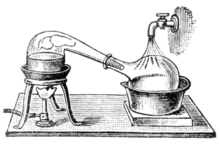

Câbir bin Hayyan
| Câbir bin Hayyan | |
|---|---|
 |
|
| Doğum | Cābir ibn Hayyān 721/722 Horasan, İran |
| Ölüm | 808/815 Kufe, Irak |
| Meslek | Fen, Simya, Eczacılık, Metalürji, Astroloji, Felsefe, Fizik ve Müzik |
| İkamet | Abbâsî Halifeliği |
| Dalı | Felsefe, Matematik, Fizik, Kimya, Psikoloji, Farmakoloji, Tıp, Kozmoloji, Müzik, Astronomi |
| Milliyet | Arap veya Horasanî / Farsî |
| Dönem | İslam'ın Altın Çağı |
| Edebî akım | Felsefe, Sufilik, Matematik, Astroloji, Astronomi, Fizik, Kimya ve Ecza |
Ebû Mûsa Câbir bin Hayyân (Arapça: ابو موسی جابربن حیان, Latince: "Geber" ya da "Geberus"; (al-Barigi Kabilesi / al-Azdi / al-Kufi / al-Tusi / al-Sufi), (doğum: 721, Tus, İran, Horasan; ölüm: 815, Kufe, Irak)[5] Batıda daha ziyâde Geber olarak tanınan, Abbâsîler döneminde yaşamış ve İslâmiyet'te fen bilimlerinin temelini atmış olan Farsî çok yönlü bir fen bilgini; simyacı, kimyacı ve eczacı; fizikçi, astronom ve astrolog; tıp ve fizik tedavi uzmanı; mühendis, coğrafyacı, filozof ve sûfi.
Hayatı
Tus, İran'da eğitimini aldıktan sonra Kûfe'ye göç etti. Câbir bin Hayyân bilinen ilk pratik Simya (Alşimi) âlimdir. Orta Çağ Avrupası'nın Simya alanına büyük ölçüde etki etmiş ve Kimya'nın da esasını oluşturmuştur. İmâm Câʿfer-i Sâdık'ın öğrencisidir.
İcâtları
Kimyager ve Eczacı olan bir babanın oğlu olarak Horasan'da doğmuş ve Yemen'de okuduktan sonra Kufe'ye giderek Abbâsî halifesi Harun Reşid'e saray âlimi olarak hizmet etmiştir.
Kimya dışında Eczacılık, Metalürji, Astroloji, Felsefe, Fizik ve Müzik gibi geniş alanda 400 ü aşan eser bıraktığı söylense de ancak 20 civarında eseri bugüne kalmıştır.
Nitrik asit, Hidrojen klorür ve Sülfürik asit'in rafine ve kristalize yöntemlerini bulduğu Kral suyu'nu icat ettiği ve Sitrik asit, Asetik asit ve Tartarik asiti keşfetiği düşünülmektedir. "İmbik" (الأنبيق al-inbiq) geliştirmiş ve kendisinin ortaya attığı Baz kavramıyla Kimya'nın gelişmesine katkıda bulunmuştur.

imbik
Ayrıca daha sonra zehirlilerin zehirlisi olan arsenik tozunu elde eden ilk kişidir.
Agathondaemon, Hermes Trismegistus, Pisagor ve Sokrates'i saydığı ve Eski Yunan, Eski Mısır ve Şia Sufizminden etkilendiği düşünülmektedir.
Eserlerinden 12. yüzyılında Latince'ye çevirilmiş olan Kitab al-Kimyaadlı eseri, Simya ve Kimya kelimelerinin kökeni olmuştur.
Canlıların kendiliğinden oluşumu ve suni yolla canlı üretme" fikrini savunmaktaydı. Cabir’e göre Allah ilk önce dört unsuru yani hava, su, ateş ve toprağı yarattı, sonra da onlardan maden, bitki, hayvan ve insan varlıklarının oluşumunu ve üremesini "irade" etti. Temelde ilahi yaratma fikrini kabul eden Cabir, bazı bitki ve hayvan türlerinin, hatta ilk insanın, kendiliğinden vücut bulduğunu kabul etmekten öte, minerallerin, bitkilerin, hayvanların ve insanların suni olarak laboratuvarda üretilebileceğini bile iddia etmektedir. Cabir, kendiliğinden oluşu tevlid ve tevellud, suni oluşumu tevalud ve tekvin, ilahi yaratma fikrini de kevn ve halk terimleriyle açıklamaktaydı.